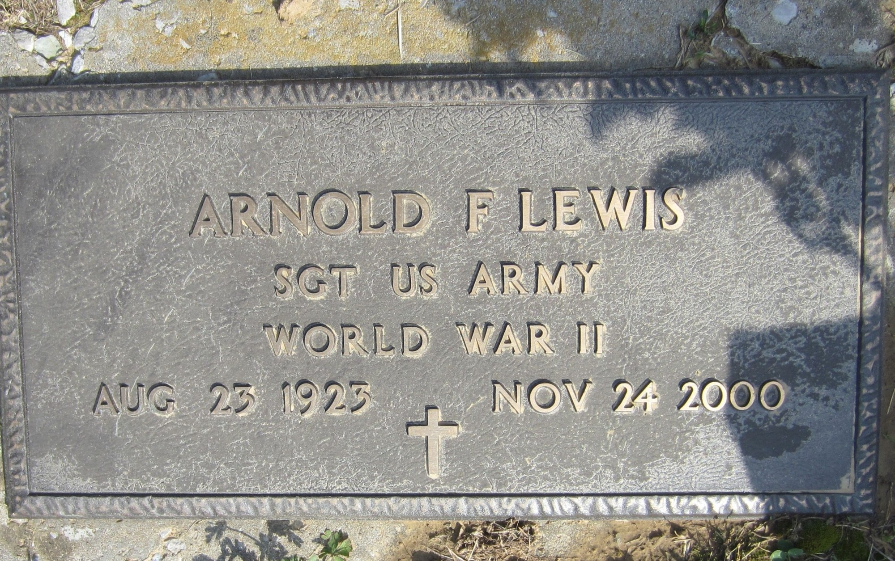

Arnold Lewis
23 August 1923 – 24 November 2000

Quick Facts
Immediate Family
Spouses
- Martha (Sullivan) Lewis (married 16 May 1947, per her obituary)
Children
- Edward Arnold Lewis Sr.
- Patricia (later Dominick)
- Pamela (later Embick)
- Jeffery Lewis
- Thomas Lewis
Siblings
- Elmo Lewis
- Winford Lewis
- Audrey Pinkley
- Wilma Meyers
- Osa Mazo
- Mildred Sherrill
- Lora Berniece (Lewis) Durham (named “Bernice Durham” in Arnold’s 2000 obituary)
Family Relationship Notes
Identity and marriage: The 2000 obituary clipping identifies “Arnold F. Lewis,” born 23 August 1923 in Lesterville, as Martha née Sullivan’s surviving husband and names their five children. Martha’s 2014 obituary says she married Arnold Lewis on 16 May 1947. These two family obituaries, the cemetery marker, and the matching Find a Grave memorial identify the project’s Arnold as Arnold Floyd Lewis; the original SS-5 is not needed to infer this identity, though its original image remains uninspected.
Parents: The same 2000 clipping names Arnold’s deceased parents as James S. and Emma, née Lee, Lewis. This agrees with the 1950 James/Emma census household and their shared grave marker. It supports the existing Gen VII links; the original SS-5 transcription independently gives James S. Lewis and Emma L. Lee.
Siblings: The 2000 obituary names Elmo Lewis, Winford Lewis, Audrey Pinkley, Wilma Meyers, Osa Mazo, Mildred Sherrill and Bernice Durham as siblings. Find a Grave links Lora Berniece Lewis Durham to Arnold and to James and Emma; this is a strong identification for the obituary’s Bernice Durham, although her original birth-name record is not yet reviewed.
Edward: The 2024 funeral-home obituary names Arnold and Martha (Sullivan) Lewis of Lesterville as Edward Arnold Lewis Sr.’s parents. This supports the project Edward’s parentage. It does not resolve the separate Gloria-versus-Margie spouse discrepancy on Edward’s profile; no change was made there.
On Family Tree Sites
No independently verified tree profile is linked.
Couple Folder
Life Timeline
23 Aug 1923
Born in Lesterville, Missouri, according to the derivative SS-5 transcription.
1943–1945
U.S. Army service dates reported in the secondary compilation; original enlistment record not reviewed.
16 May 1947
Married Martha Sullivan, according to Martha’s obituary.
1950
Census index places an Arnold Lewis with wife “Mertha” and children Edward A. and Patricia A in St. Louis; original census image not yet located.
24 Nov 2000
Death date reported in derivative Social Security/death-index data.
Life Story
Arnold F. Lewis was born in Lesterville, Missouri, on 23 August 1923. His 2000 obituary says he served in the U.S. Army during World War II, retired from Union Electric as a boiler operator, and lived in Collinsville, Illinois. It says he and Martha (Sullivan) Lewis had five children and identifies his parents as James S. and Emma (Lee) Lewis. Martha’s 2014 obituary reports their marriage on 16 May 1947. Arnold died 24 November 2000 and was buried at Saint John Cemetery in Collinsville.
Photo Gallery


Sources and Evidence
- Martha J. Lewis obituary, published 27 March 2014: birth, death, marriage date, named children and siblings.
- Howard City Funeral & Cremation Services obituary for Edward Arnold Lewis Sr., 2024: reports parents Arnold and Martha (Sullivan) Lewis of Lesterville; children Ed and Chad; wife Margie. Directly supports the obituary subject’s parentage, while identification with the project’s Edward remains supported, not proven.
- FamilySearch 1950 census index search: Arnold Lewis, born about 1924 in Missouri, St. Louis, with wife indexed as Mertha Lewis and children Edward A. and Patricia A. Index only; image not inspected.
- SortedByName Lewis compilation, transcribes Arnold F. (Arnold Floyd) Lewis SS-5 66353334323 (May 1941), reporting 23 Aug. 1923, Lesterville, parents James S. Lewis and Emma L. Lee; it also transcribes death-date and military-index entries. Derivative transcription; originals not inspected.
- 1950 U.S. Census, Reynolds County, Missouri, ED 90-5, sheet 26 (NARA image): James S. Lewis, Emma L. Lewis, daughter Lora B. (23) and granddaughters Sharon L. and Karen L. (both 5). Image reviewed directly.
- Find a Grave memorial for Arnold Floyd Lewis, accessed 24 Nov. 2026: exact dates and Saint John Cemetery; memorial photos include his marker, family marker, and obituary clipping.
- Find a Grave memorial for Lora Berniece (Lewis) Durham: links her as a daughter of James and Emma and as a sibling of Arnold.
- Arnold memorial photo tab: marker images by #47011141 and 2000 obituary clipping by Ron Roberts, 3 Jan. 2023.

Person Archive
Browse the records, source notes, photos, and clippings saved for this person in the American Bloodline archive.
Research Notes and Open Questions
- No individual portrait for Arnold appeared in the Find a Grave memorial/photo tab or the obituary pages inspected. His profile hero uses the verified shared Arnold-and-Martha family marker; his individual military marker and the obituary clipping are archived and shown in the gallery.
- The 2000 death notice directly bridges Arnold F. Lewis, born in Lesterville on 23 August 1923, to wife Martha née Sullivan and parents James S. and Emma née Lee. Martha’s 2014 obituary independently gives the 1947 marriage and matching children. The remaining original SS-5 and civil marriage record are useful source goals, not unresolved identity prerequisites.
- The 1950 FamilySearch index gives an Arnold Lewis born about 1924 with a wife indexed “Mertha” and children Edward A. and Patricia A.; the original St. Louis household image was not located. Preserve its one-year date/index discrepancy without displacing the clearer obituary and cemetery evidence.
- The 2000 obituary names seven siblings; the memorial lists Lora Berniece Lewis Durham as Arnold’s sister and as child of James S. and Emma. This strongly matches “Bernice Durham.” The family names on the obituary are transcribed as printed; several appear as married names.
- Edward’s 2024 obituary calls his wife Margie, while Rick’s family account identifies Gloria. This separate conflict remains unresolved; his profile was not changed.
DNA
No DNA matches linked yet.
Family Notes
No Family Notes link is listed on this profile.
Profile updated 24 November 2026 with 1950 census and SS-5 research. Gen VI relationships and existing folder link preserved.